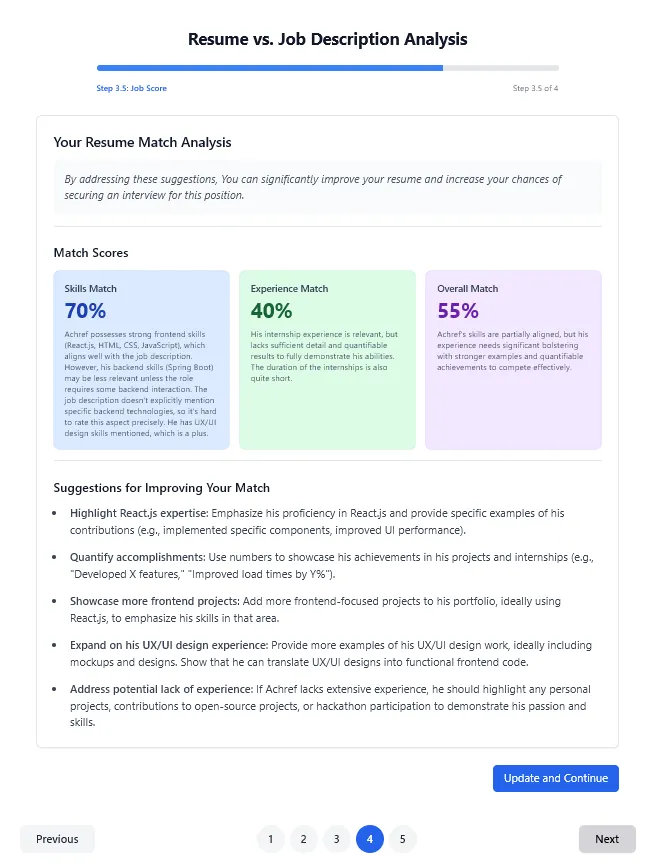

AI-powered recruitment platform · AlloGenie
TalentSync
A recruitment platform that analyzes candidate CVs against job descriptions, returns matching scores and feedback, and generates personalized cover letters — with dedicated spaces for candidates, recruiters and admins.
Stack
Key features
- AI CV ↔ job matching score
- CV data extraction
- Cover letter generation
- Candidate / recruiter / admin UIs
- Role-based access control
- JWT + Google OAuth
- File upload handling
- UML, user stories, sprints
